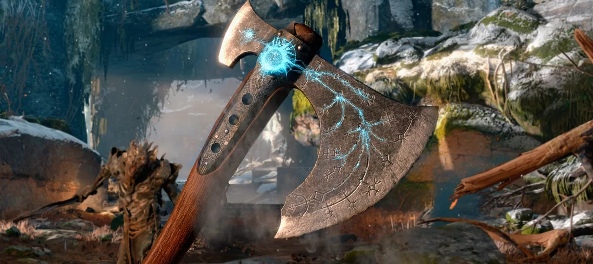

Leviatã
Ele foi forjado pelos Irmãos Huldra, Sindri e Brok, que também forjaram o martelo de Thor, Mjölnir, depois de se sentirem responsáveis pela destruição provocada por Thor com sua criação. Como uma arma feita para se opor ao poder de Mjölnir e inspirada no tamanho gigantesco de Jörmungandr, Brok sugere que o machado seja chamado de Leviatã. De acordo com Sindri, quando o conheceu pela primeira vez, a lâmina foi feita e entregue a Faye, que por sua vez repassou para seu marido Kratos antes de sua morte. O machado tem várias runas inscritas na lâmina que lhe conferem diferentes poderes, entre eles o uso de gelo e a capacidade de recuperar a arma a qualquer distância. Ele também tem dois slots para ataques rúnicos: um ataque pesado e leve. O Pomo do Machado é personalizável com pomos encontrados em todos os Reinos ou comprados no Brok e Sindri. Durante a jornada de Kratos para espalhar as cinzas de Faye, ele encontra Brok e Sindri, que melhoram o machado, aumentando sua magia e força de ataque. Ao se trazer a um dos irmãos uma Chama Congelada, o machado pode ser evoluído, aumentando o tamanho da lâmina e adicionando ouro ornamentado à lâmina e ao cabo.